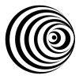

ABOUT
PROJECTS

BISMÚT
We are Bismúta creative engine foridentity, content, andexperimental techwith art at its core.
BISMÚT Café
To Draw A Line
In a Void
Green By IcelandIn collaboration with Gagarin & Bark studio
Iceland Academy of the ArtsGraduation Branding
UN Women
Campaign
SteypaBranding
The Garden ProjectBranding
Íslandsstofa - Design System
In collaboration with Bark studio